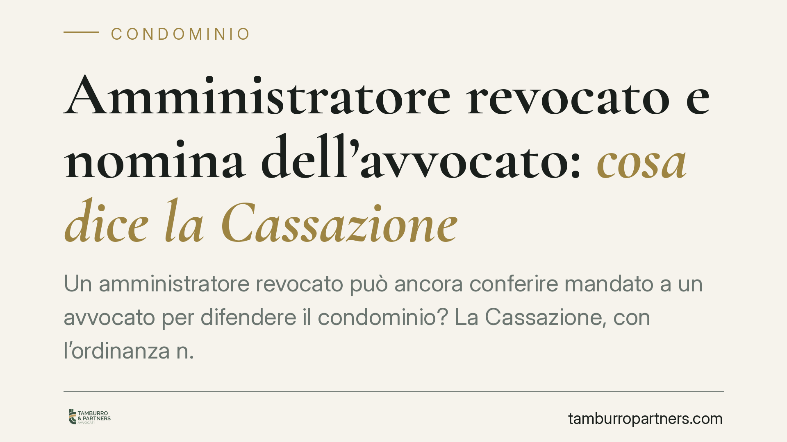

Amministratore revocato e nomina dell'avvocato: cosa dice la Cassazione
Un amministratore revocato può ancora conferire mandato a un avvocato per difendere il condominio? La Cassazione, con l'ordinanza n. 27526/2025, risponde di sì: fino all'effettivo insediamento del successore opera la prorogatio imperii, che garantisce continuità gestionale ed evita la paralisi degli atti urgenti, comprese le scelte processuali.

Il fatto
La questione ricorrente nella prassi condominiale è semplice ma insidiosa: l'assemblea revoca l'amministratore, ma nel frattempo il condominio deve stare in giudizio o promuovere un'azione legale. Chi conferisce il mandato al difensore se il nuovo amministratore non è ancora operativo?
La Corte di Cassazione, con l'ordinanza n. 27526/2025, ha ribadito che l'amministratore revocato conserva i propri poteri fino all'effettiva sostituzione. Tra questi rientra anche la facoltà di nominare l'avvocato del condominio.
Inquadramento normativo
Il principio richiamato è quello della *prorogatio imperii*: l'organo il cui incarico è cessato continua a esercitare le funzioni fino alla presa in carico da parte del subentrante. La ratio è evitare vuoti di gestione che pregiudicherebbero l'ente.
In materia condominiale il riferimento è l'art. 1129 del Codice civile, che disciplina la nomina, la revoca e gli obblighi dell'amministratore, e l'art. 1131 c.c., che gli attribuisce la rappresentanza dei condòmini, anche in giudizio, nei limiti delle attribuzioni.
La Cassazione chiarisce che la revoca produce effetti "pieni" solo quando il condominio dispone di un nuovo amministratore effettivamente in carica. Prima di quel momento, gli atti compiuti dall'amministratore uscente — inclusa la scelta del legale e il conferimento della procura — restano validi e vincolanti per il condominio. Diversamente, l'ente resterebbe privo di rappresentanza processuale, con il rischio concreto di decadenze e di soccombenza per inattività.
Implicazioni pratiche
Per il condominio la pronuncia significa maggiore sicurezza: la continuità della difesa non si interrompe per effetto della sola delibera di revoca. Un giudizio già instaurato non si "scopre" senza rappresentanza, e le scadenze processuali restano presidiate.
Per l'amministratore uscente il messaggio è duplice. Da un lato, conserva la legittimazione a compiere gli atti necessari, compresa la nomina del difensore, senza incorrere in responsabilità per aver agito "senza titolo". Dall'altro, permane il dovere di gestire con diligenza in questa fase transitoria: la prorogatio è uno strumento di continuità, non una licenza per iniziative estranee alla conservazione.
Per il condòmino che ha promosso la revoca, invece, occorre attenzione: contestare il mandato conferito dall'amministratore uscente sul solo presupposto dell'avvenuta revoca è, alla luce di questo orientamento, una strada difficile. La validità dell'atto va valutata guardando al momento dell'effettivo insediamento del successore.
Resta ferma la necessità che l'azione o la resistenza in giudizio rientri nei poteri dell'amministratore o sia coperta da idonea autorizzazione assembleare, quando richiesta dalla natura della controversia (ad esempio nelle liti che esulano dalle attribuzioni tipiche).
Cosa fare in concreto
- Verificate la data di insediamento del nuovo amministratore. È quello, e non la delibera di revoca, il momento che segna il passaggio effettivo dei poteri.
- Conservate la documentazione della fase transitoria. Verbale di revoca, accettazione del nuovo incarico e procura al difensore vanno tenuti ordinati, per dimostrare la validità degli atti compiuti.
- Controllate la copertura assembleare del mandato. Per le liti che eccedono le attribuzioni ordinarie dell'amministratore, accertate che vi sia la delibera autorizzativa richiesta.
- Non interrompete la difesa in corso. Se un giudizio è pendente, evitate di eccepire genericamente il difetto di rappresentanza: valutate prima la tenuta dell'eccezione alla luce dell'orientamento della Cassazione.
- Formalizzate al più presto la nomina del successore. Ridurre la fase di prorogatio limita le incertezze e allinea la gestione al nuovo mandato.
Conclusioni
L'ordinanza n. 27526/2025 privilegia la continuità gestionale rispetto al formalismo della revoca. Fino a quando il condominio non ha un nuovo amministratore in carica, gli atti dell'uscente — compresa la nomina dell'avvocato — restano efficaci. Un principio che protegge l'ente dal rischio più insidioso: restare senza voce nel momento in cui la difesa è più necessaria.
---
Contributo informativo a cura di Tamburro & Partners - Avv. Giuseppe Tamburro. Non costituisce parere legale.
Ogni condominio ha una storia a sé.
Se gestisci un'amministrazione e vuoi un confronto su una specifica questione condominiale, scrivi allo studio. Ti rispondiamo entro un giorno lavorativo.